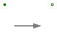
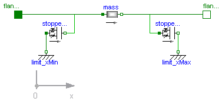
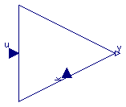

| Name | Description |
|---|---|
| TemperatureCoefficient | |
| TranslatoryStopper | Translatory, nonlinear spring/damper combination with free travel for modelling of impact, e.g. at a stopper |
| TranslatoryArmature | Mass with free travel between two stoppers |
| VariableGain | Gain block with variable gain |
type TemperatureCoefficient = Real (final quantity="TemperatureCoefficient", final unit
= "1/K");

This component is intended for modelling of impact between a stopper and a freely travelling translatory mass. It is similar to Modelica.Mechanics.Translational.ElastoGap, but the force during contact of the impact partners is calculated differently. Kinetic energy is dissipated in a damper only during collision of the two impact partners, but not if they move away from each other. Also, as penetration depth increases, the force increases non-linearly.
| Type | Name | Default | Description |
|---|---|---|---|
| Real | c | 1e6 | Spring stiffness between impact partners [N/m] |
| Real | d | 2e2 | Damping coefficient between impact partners [N/ (m/s)] |
| Length | s_n | 1e-5 | Normalized penetration depth of impact partners [m] |
| Real | n | 1 | Exponent for force function (n >= 1) |
class TranslatoryStopper
"Translatory, nonlinear spring/damper combination with free travel for modelling of impact, e.g. at a stopper"
extends Modelica.Mechanics.Translational.Interfaces.Compliant;
parameter Real c(
final unit="N/m",
final min=0) = 1e6 "Spring stiffness between impact partners";
parameter Real d(
final unit="N/ (m/s)",
final min=0) = 2e2 "Damping coefficient between impact partners";
SI.Velocity v_rel "Relative velocity between impact partners";
Boolean Contact "False, if s_rel > 0";
parameter SI.Length s_n=1e-5
"Normalized penetration depth of impact partners";
parameter Real n=1 "Exponent for force function (n >= 1)";
SI.Velocity delta_v "Relative velocity";
equation
v_rel = der(s_rel);
Contact = s_rel < 0;
delta_v = if (v_rel < 0) then v_rel else 0;
f = if Contact then (c*s_rel + d*delta_v) * (abs(s_rel)/s_n)^n else 0;
end TranslatoryStopper;

In translatory actuators with limited stroke, the armature with its inertia can travel between two stoppers.
| Type | Name | Default | Description |
|---|---|---|---|
| Mass | m | 1 | Armature mass [kg] |
| Position | x_max | 10e-3 | Position of stopper at maximum armature position [m] |
| Position | x_min | 0 | Position of stopper at minimum armature position [m] |
| Type | Name | Description |
|---|---|---|
| Flange_a | flange_a | |
| Flange_b | flange_b |
model TranslatoryArmature
"Mass with free travel between two stoppers"
parameter SI.Mass m=1 "Armature mass";
parameter SI.Position x_max=10e-3
"Position of stopper at maximum armature position";
parameter SI.Position x_min=0
"Position of stopper at minimum armature position";
Modelica.Mechanics.Translational.SlidingMass mass(m=m);
Modelica.Mechanics.Translational.Interfaces.Flange_a flange_a;
Modelica.Mechanics.Translational.Interfaces.Flange_b flange_b;
Modelica.Mechanics.Translational.Fixed limit_xMin(s0=x_min);
Modelica.Mechanics.Translational.Fixed limit_xMax(s0=x_max);
Modelica_Magnetic.Utilities.TranslatoryStopper stopper_xMax;
Modelica_Magnetic.Utilities.TranslatoryStopper stopper_xMin;
equation
connect(mass.flange_a, stopper_xMin.flange_b);
connect(limit_xMax.flange_b,stopper_xMax. flange_b);
connect(stopper_xMax.flange_a, mass.flange_b);
connect(mass.flange_a, flange_a);
connect(limit_xMin.flange_b, stopper_xMin.flange_a);
connect(flange_b, mass.flange_b);
end TranslatoryArmature;

This component is similar to Modelica.Blocks.Math.Gain. However, gain k is not a parameter here and thus has a higher variability. The output y is computed as product of gain k and input u:
y = k * u;
| Type | Name | Description |
|---|---|---|
| input RealInput | u | Input signal connector |
| output RealOutput | y | Output signal connector |
| input RealInput | k | Variable gain |
block VariableGain "Gain block with variable gain" public Modelica.Blocks.Interfaces.RealInput u "Input signal connector"; Modelica.Blocks.Interfaces.RealOutput y "Output signal connector"; Modelica.Blocks.Interfaces.RealInput k "Variable gain"; equation y = k*u; end VariableGain;